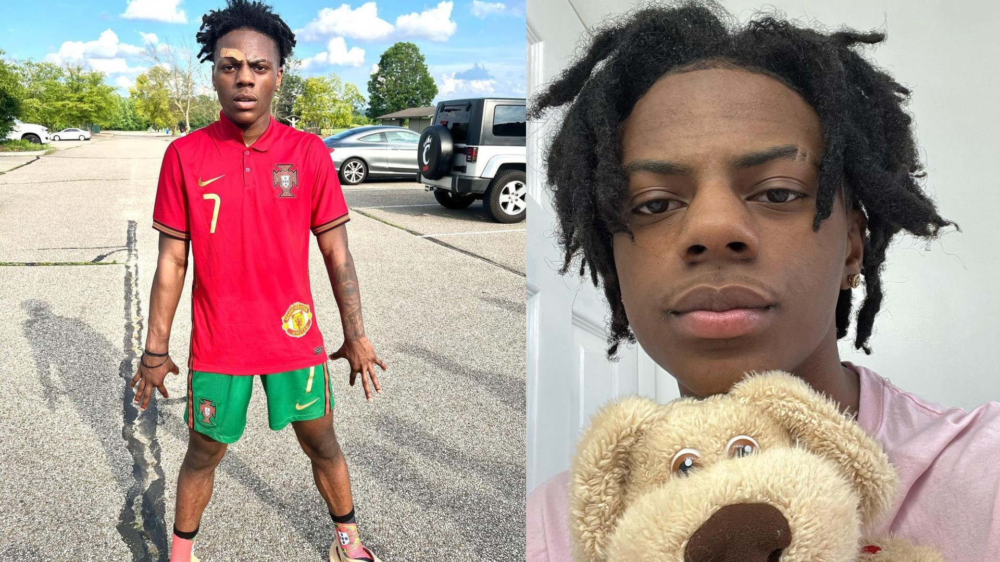

Darren Watkins Jr. (Cumpleaños: 21 de enero de 2003), mejor conocido en internet como iShowSpeed (o simplemente Speed o Speedy), es un YouTuber estadounidense de Cincinnati, Ohio. Es conocido por sus transmisiones en vivo de videojuegos y entretenimiento y por obtener más de 1 millón de suscriptores en cuestión de días en el 2021. Comenzó a obtener fama cuando su base de fanáticos comenzó a publicar memes sobre él en TikTok.
El 13 de diciembre de 2021, Darren estaba en un programa de citas en vivo en el canal Twitch de Adin Live. En el programa, hubo varias mujeres y hombres a quienes se les hicieron varias preguntas relacionadas con las citas. Darren le preguntó a una mujer llamada Ash.Kaash "Di si fueron las dos últimas personas en la Tierra y tuvieron que reproducirse para que el mundo continuara". Ash dijo que no, afirmando que sus hijos tendrían que realizar incesto para que continuaran después. Darren luego dijo "¿Quién me va a detener?", y comenzó a repetir la frase en un tono más agresivo después de que Ash dijera que lo haría.
